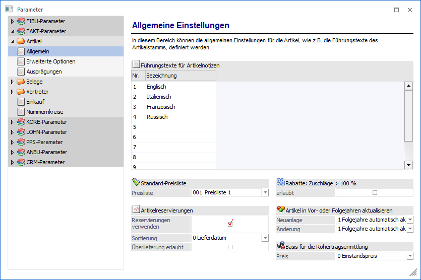
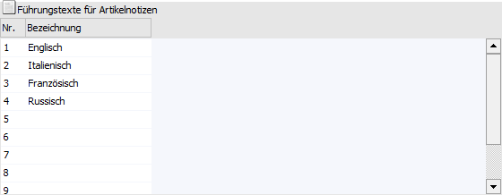
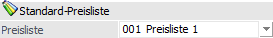
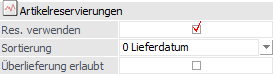
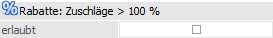
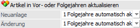
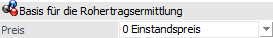

Über den Bereich "FAKT-Parameter - Artikel - Allgemein" können allgemeine Einstellungen für die Artikel der WinLine FAKT vorgenommen werden.
Hinweis
Standardmäßig wird das Fenster in einem "Lesemodus" geöffnet, d.h. es können die bestehenden Einstellungen kontrolliert, Änderungen allerdings nicht durchgeführt werden. Hierfür muss zunächst mit Hilfe des Buttons "Bearbeiten" der "Bearbeitungsmodus" aktiviert werden. Alternativ kann diese Aktivierung auch über das Kontextmenü der rechten Maustaste (Funktion "Applikation xxx bearbeiten") erfolgen.

Führungstexte für Artikelnotizen

Ø Bezeichnung
Im Artikelstamm stehen im Register "Text" 10 "Notizblöcke" zur Verfügung, in welche beliebig viel Fließtext geschrieben werden kann. Die Führungstexte (d.h. die Bezeichnung / die Beschreibung) für diese 10 Texteingabefelder werden hier definiert. Die Notizblöcke selbst können in den entsprechenden Formularen wahlweise angedruckt oder automatisch in die Belegerfassung übernommen werden.
Standard Preisliste

Ø Preisliste
Wenn in der WinLine FAKT manuell ein neuer Artikel angelegt wird, dann kann dort ein allgemeiner Verkaufspreis bzw. ein allgemeiner Einkaufspreis angelegt werden. Im Feld Standard-Preisliste kann bestimmt werden, mit welcher Preisliste diese allgemeinen Preise angelegt werden sollen.
Artikelreservierungen

Mit Hilfe der folgenden 2 Einstellungen kann grundsätzlich entschieden werden, ob und wie in der WinLine FAKT mit Reservierung gearbeitet werden soll.
Ø Res. verwenden
Wird die Option "Reservierung verwenden" in Zusammenhang mit der Einstellung "Bestellung mit Reservierung" im Artikelstamm verwendet, dann werden Kunden- und Lieferantenbestellung so behandelt, als würde es ein Sperrlager geben (bestellte Mengen werden bis zur Auslieferung fix reserviert und können nicht anderweitig vergeben werden). Nähere Informationen hierzu entnehmen Sie bitte dem WinLine FAKT-Handbuch.
Achtung
Wird das Reservierungskennzeichen in einem bestehenden Datenstand verändert, wird folgendes durchgeführt:
ü Beim Aktivieren werden nach Abfrage für alle Artikel, für die das Kennzeichen "auftragsbezogene Bestellung" oder "Bestellung mit Reservierung" gesetzt ist, die Reservierungszeilen in der Dispozeile aufgrund der vorhandenen Aufträge und Bestellungen neue erstellt.
ü Beim Deaktivieren der Checkbox werden nach Abfrage alle Reservierungszeilen in der Dispotabelle gelöscht.
Ø Sortierung
Für die Sortierung der Artikelreservierungen sehen die Möglichkeiten "0 - Lieferdatum" (Standardvorbelegung), sowie die "1 - Priorität" zur Verfügung. Wird als Sortierung die Priorität gewählt, so werden die Aufträge nach Priorität und erst an zweiter Stelle nach dem Lieferdatum sortiert. Bei Auswahl "Lieferdatum" wird nach diesem sortiert. Dies betrifft die Anzeige im Reservierungsfenster, die Zuteilung der Bestellmengen zu den vorhandenen Aufträgen beim "automatischen Bestellvorschlag" bzw. das Neuberechnen der Reservierungen (Menüpunkt "Reservierungen bearbeiten").
Ø Überlieferung erlaubt
Durch Aktivierung dieser Option kann eine Überlieferung für Reservierungsartikel vorgenommen werden, d.h. bei der Erfassung eines Lieferscheins kann eine Menge größer der Bestellmenge erfasst werden.
Rabatte: Zuschläge > 100 %

Ø erlaubt
Ist diese Option nicht aktiviert (= Standardeinstellung) werden Rabattangaben größer 100% bei der Eingabe abgewiesen. Wird diese Option aktiviert, so können auch Rabattprozentsätze größer 100% eingegeben werden.
Artikel in Vor- oder Folgejahren aktualisieren

Die folgenden Einstellungen sind mandantenabhängig, aber jahresübergreifend. D.h. die gewählten Einstellungen werden in alle Wirtschaftsjahre des Mandanten übernommen.
Mit dieser Einstellung kann entschieden werden, wie sich eine Neuanlage oder eine Änderung von Artikeln auf die anderen Wirtschaftsjahre auswirken soll. Dabei gibt es unterschiedliche Einstellungen:
Ø Neuanlage
ü 0 - nicht aktualisieren
Der
Artikel wird nur im aktuellen Wirtschaftsjahr angelegt.
ü 1 - Folgejahre automatisch
aktualisieren
Der Artikel wird automatisch auch in Folgejahren (sofern
vorhanden) angelegt, wobei auch geprüft wird, ob das Konto ggf. nicht schon
vorhanden ist.
ü 2 - Vor- und Folgejahre
automatisch aktualisieren
Der Artikel wird automatisch in Vor- und
Folgejahren angelegt, wobei auch geprüft wird, ob das Konto ggf. nicht schon
vorhanden ist.
ü 3 - Manuelle Auswahl
Bei dieser
Option wird kann bei jeder Neuanlage gewählt werden, auf welche Wirtschaftsjahre
der Artikel verteilt werden soll. D.h. bei Speicherung des Artikels wird das
Fenster "Mandanten-/Jahres-Selektion" geöffnet, über welches die Entscheidung
getroffen werden kann.
Ø Änderung
ü 0 - nicht aktualisieren
Der
Artikel wird nur im aktuellen Wirtschaftsjahr geändert.
ü 1 - Folgejahre automatisch
aktualisieren
Der Artikel wird automatisch auch in Folgejahren (sofern
vorhanden) geändert.
ü 2 - Vor- und Folgejahre
automatisch aktualisieren
Der Artikel wird automatisch in Vor- und
Folgejahren geändert.
ü 3 - Manuelle Auswahl
Bei dieser
Option wird kann bei jeder Änderung gewählt werden, auf welche Wirtschaftsjahre
die Änderung übernommen werden soll. D.h. bei Speicherung des Artikels wird das
Fenster "Mandanten-/Jahres-Selektion" geöffnet, über welches die Entscheidung
getroffen werden kann.
Hinweis 1
Wenn ein neu angelegter Artikel bereits in einem anderen Wirtschaftsjahr vorhanden ist, dann wird - auch wenn bei der Neuanlage die Option " Folgejahre automatisch aktualisieren" oder " Vor- und Folgejahre automatisch aktualisieren" eingestellt ist - zunächst eine entsprechende Meldung ausgegeben. Anschließend wird das Fenster "Mandanten-/Jahres-Selektion" geöffnet über welches ersichtlich ist, in welchen Jahren der Artikel bereits vorhanden ist. Dort kann dann auch ausgewählt werden kann, in welche Jahre der Artikel übernommen werden soll. Wenn auch das Wirtschaftsjahr ausgewählt wird, in welchem der Artikel bereits vorhanden ist, so wird der bestehende Artikel überschrieben.
Hinweis 2
Diese Einstellungen finden Anwendung in den folgenden Bereichen:
ü Artikelstamm (auch in Kombination mit individuellen Formularen)
ü Stammdaten editieren
ü Hinterlegung einer Vorlage im "Ausprägungen initialisieren" für Aktualisierung von Ausprägungen
Wenn zu einem bestehenden Hauptartikel im Aufteilungsfenster eine neue Ausprägung angelegt wird, so wird diese in die Vor- bzw. Folgejahre übernommen. Das betrifft z.B. die Menüpunkte "Lagerbuchhaltung", "Belegerfassen", usw., wobei die Ausprägung selbst ggf. im "Ausprägungen verwalten" in den anderen Jahren vorher angelegt werden muss.
Basis für die Rohertragsermittlung

Ø Preis
An dieser Stelle kann die Basis für die Rohertragsermittlung und -prüfung hinterlegt werden. Dabei stehen folgende Möglichkeiten zur Verfügung:
ü 0 - Einstandspreis
ü 1 - letzter Einkaufspreis
ü 2 - niedrigster Einkaufspreis
ü 3 - letzter Einkaufspreis +
Bezugskosten
Es werden die Bezugskosten pro Stück berücksichtigt, wenn im
Artikelstamm im Register "Lager" ein Eintrag vorhanden ist. Ansonsten wird der
BNK -Prozentsatz aus der Artikelgruppe berücksichtigt.
ü 4 - allgemeiner Einkaufspreis
Hinweis
Diese Einstellung kann pro Artikel noch übersteuert werden (Artikelstamm - Register "Lager" - Unterregister "Einstellungen" - Option "Basis für Rohertrag").
Achtung
Handelt es sich um einen Artikel mit einem Lagerstand von kleiner oder gleich 0, dann wird die Preisbasis der Rohertragsprüfung auf Grundlage der Einstellung "Basis für die Rohertragsprüfung bei Lagerstand kleiner oder gleich 0" (FAKT-Parameter - Belege - Artikel) durchgeführt.